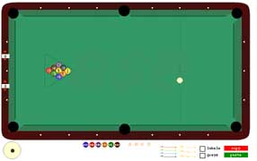

| software |
| home page |
|  |
|
3 million in venture funding co-led by Hudson Ventures and Echelon Ventures. Formerly known as ru4, Poindexter impressed these venture capitalists with Poindexter 1. 1, which features a rules-based targeting system enhanced by a real-time advertising generator. A particular standout was gaming destination NeoPets. Launched in March 2000, NeoPets appeared on Jupiter Media Metrix' July list of stickiest sites at No. |